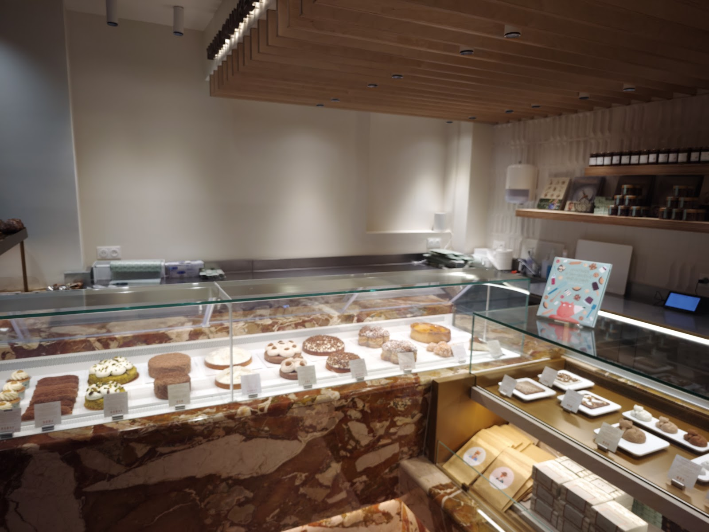

Retrait Rue de la Tour
Croissant au beurre AOP
Feuilletage pur beurre, viennoiserie signature de la maison.
À partir de 2,80 €

Pâtisserie Yann Couvreur — boutique du 16e arrondissement. Venez, c'est ouvert.
3.9/5 · 34 avisPlus qu'une adresse, un quartier, un comptoir, une lumière. Yann Couvreur s'installe Rue de la Tour, dans le 16e, et y façonne chaque jour viennoiseries, pâtisseries et chocolats.
Ici, le marbre rose accueille vos commandes. Ici, on vous connaît.
Voir les horaires & accèsNos classiques et nos créations de saison, disponibles en boutique aujourd'hui. Commandez en click & collect, ou venez choisir sur place.
Feuilletage pur beurre, viennoiserie signature de la maison.
À partir de 2,80 €
Caramel beurre salé, cœur fondant — le classique breton réinterprété.
À partir de 3,50 €
Crème citronnée acidulée, pâte sablée maison, meringue légère.
À partir de 6,50 €
Praliné noisette, crème mousseline — l'hommage à la course cycliste.
À partir de 7,20 €
Chocolat grand cru, crème montée — à savourer au Café YC.
À partir de 5,00 €
Notre espace Café YC vous reçoit pour une pause sucrée ou un petit-déjeuner sur le pouce. Terrine maison, viennoiseries tièdes et café de torréfacteur. Pas de réservation — installez-vous.
| Lundi | Fermé |
| Mardi | 8h – 20h |
| Mercredi | 8h – 20h |
| Jeudi | 8h – 20h |
| Vendredi | 8h – 20h |
| Samedi | 8h – 20h |
| Dimanche | 8h – 20h |
Produits naturels, beurre AOP, fruits de saison, pas d'additifs. Yann Couvreur défend une pâtisserie lisible, où la technique sublime l'ingrédient sans le masquer.
Chaque création est pensée pour être dégustée le jour même — fragilité assumée, plaisir immédiat.